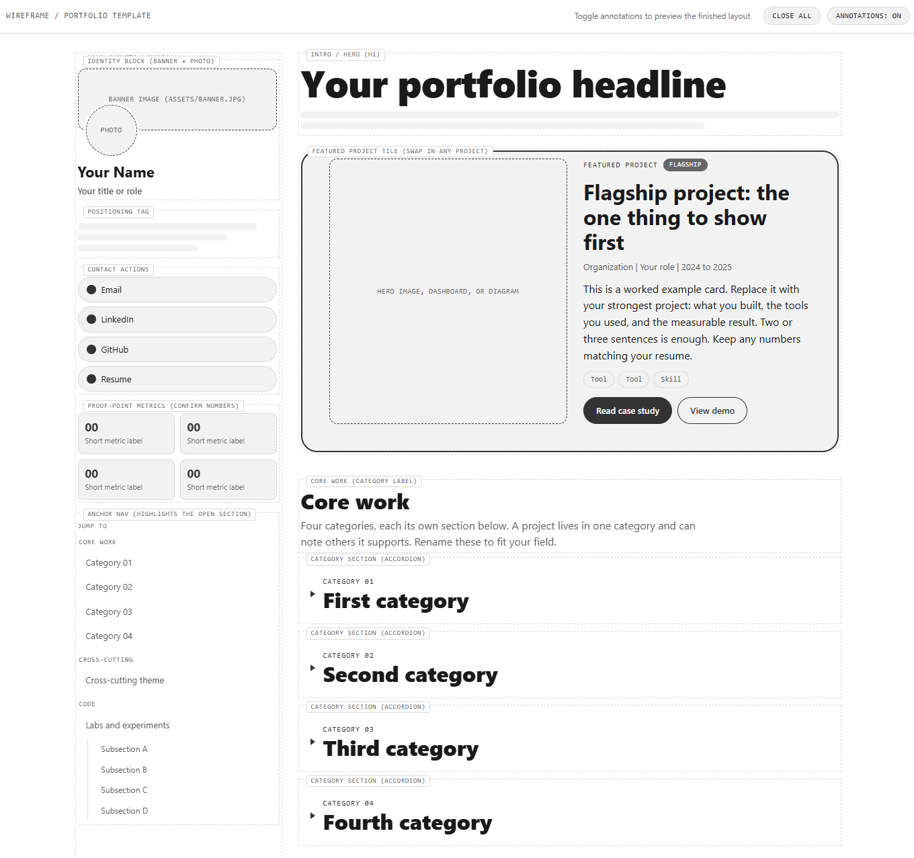
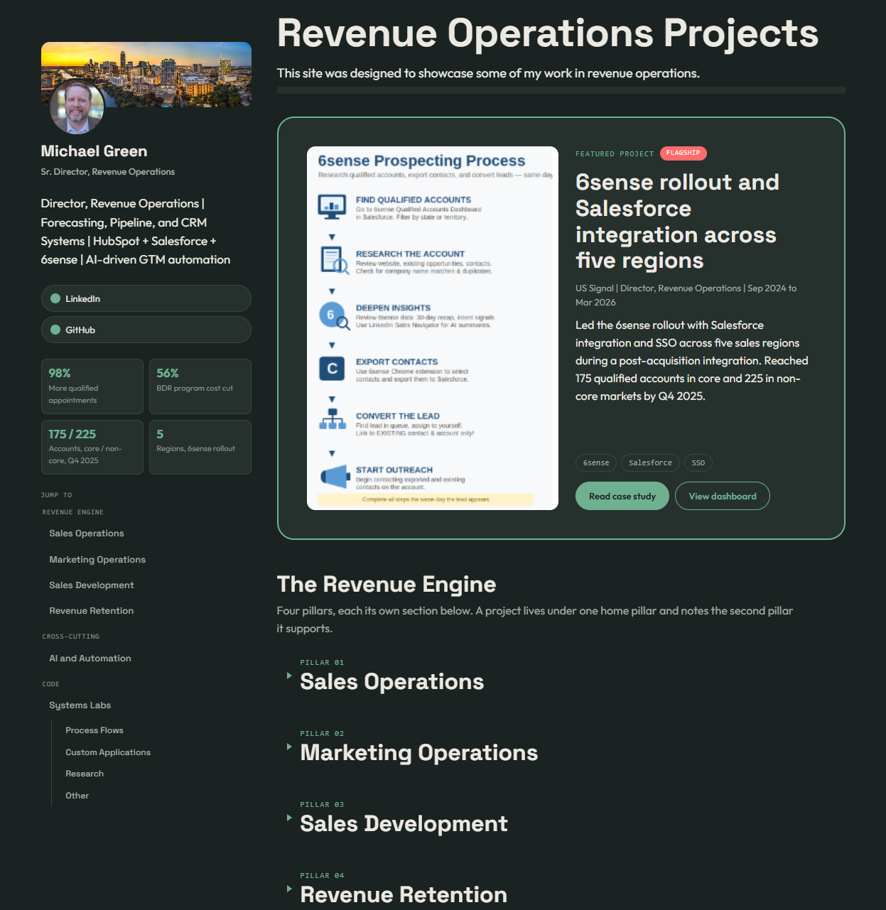

Case study
Portfolio site template
A free, forkable portfolio site that ships as a labeled wireframe, serves a tailored view per viewer, and hosts at no cost on GitHub Pages. This site runs on it.
The problem
Most people have a resume and a LinkedIn profile but no single place to show the actual artifacts of their work: dashboards, process documentation, code, and case studies. The tools that promise to fix this tend to be heavy (a framework and a build step), paywalled, or too rigid to tailor for a specific reader. A blank template does not help either, because you cannot see the structure until you have already filled it in.
Goals and constraints
The template had a short, firm brief:
- Free to host, with no server and no paid plan.
- No framework and no build step, so it stays easy to fork and edit.
- Teaches its own layout, so someone with no front-end background can finish it.
- Serves a tailored view per reader without cloning the site.
- Works with JavaScript turned off.
- Friendly to an AI coding agent for filling in content and restyling.
How it works
Content lives in data. Each project is a small JSON file (a card). A manifest (an audience) lists which cards appear in each section and in what order, and can override the headline. The default homepage is written into the HTML as real markup, and a small Python script rebuilds that baked homepage from the JSON so the two never drift. A link such as yoursite.com/?audience=acme swaps the card set in the browser for a specific reader, while the default page keeps working for everyone else.
?audience= link makes the same page reflow in the browser.Key decisions and tradeoffs
Ship as a wireframe. The template opens in an annotated mode where every region names itself with a dashed outline and a label. That trades a polished first impression for something more useful to a new user: you can see the structure before you have any content, then switch the wireframe off with one CSS class.

Data, not pages. Cards and audiences keep projects reusable and let one site present many curated views. The cost is a small content model to learn instead of editing a single HTML file.
Baked homepage plus a generator. Writing the default view into the HTML means the page shows content with JavaScript off and indexes well for search. The cost is a rebuild step: change the default, run the generator.
Design tokens for everything. Colors, fonts, radii, and motion are CSS variables in one place, so a full retheme is a handful of edits and nothing is hardcoded in a component.
See it in production
This site is the live example. The default view is the homepage. Add ?audience=demo to the URL to see the same site reflow for a different reader, with a different featured project and a curated card set.

Use it
The template is MIT licensed, so you can fork it and make it your own. Start with the README for setup, then read the adopter guide for how to choose credible proof for each project and how to anonymize client work you cannot name.
Case study. Numbers on this page match the resume and other profiles. Sample data only in every screenshot.